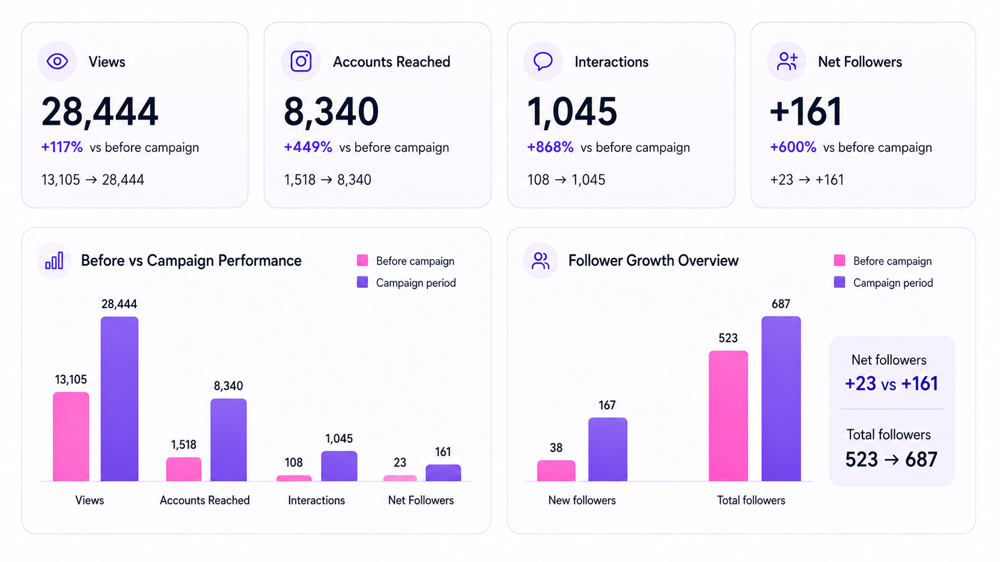
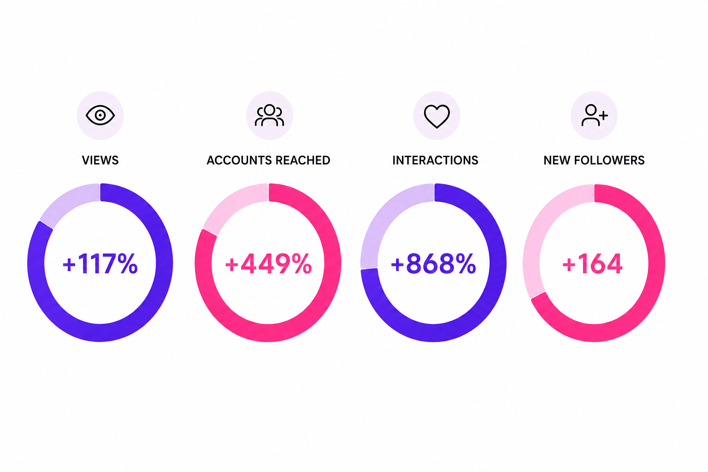
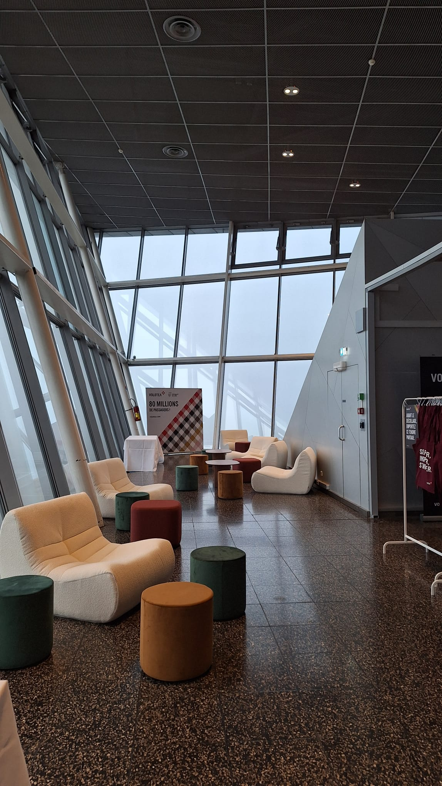
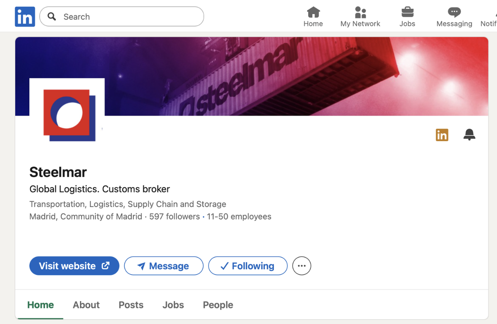
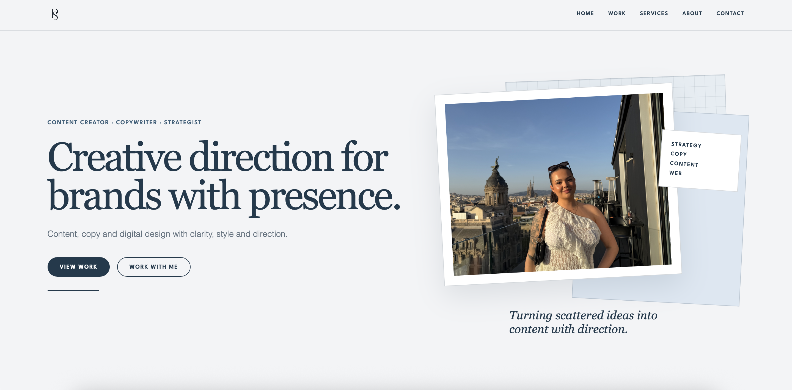
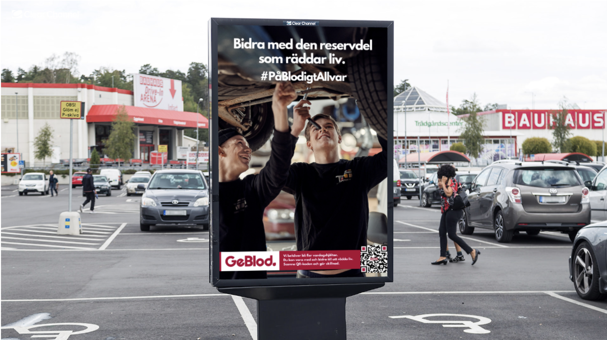

Hero reel
Campaign launch video created to introduce the giveaway and capture attention.

Selected work
A curated selection of projects across lifestyle, travel, logistics and social impact — bringing together copywriting, content strategy, visual direction and digital communication.
Plié Pilates

I developed the visual direction for Plié Pilates, a reformer pilates studio in Gothenburg — shaping the logo direction, typography, color palette, content style and branded campaign material.
The project later expanded into a full social media campaign, where I shaped the concept, planned the rollout and created the content from start to finish — including copywriting, photography, video, editing and publishing.
Campaign content
A selection of videos created for Instagram and TikTok, designed to build attention, communicate the campaign clearly and stay aligned with the studio’s visual identity.
Campaign launch video created to introduce the giveaway and capture attention.
Short-form content built from studio footage, movement details and brand atmosphere.
Additional short-form content created for the campaign rollout across Instagram and TikTok.
Campaign results
The campaign results showed stronger visibility, higher engagement and clear follower growth.


Volotea
Worked on concept and copy for an airport activation celebrating Volotea’s 80 million passengers milestone, transforming a brand achievement into a warm, physical experience for travellers.
The messaging focused on making the moment feel celebratory, human and easy to connect with — from the campaign idea to the passenger-facing copy used around the activation.

Steelmar
I manage Steelmar’s ongoing LinkedIn presence, working across content planning, research, copywriting, visual direction and publishing to maintain a consistent and relevant B2B presence.
Each month, I turn company updates, operational topics and developments across the logistics industry into a structured content plan — defining topics, formats and publishing rhythm before developing the individual posts.
The work goes beyond writing individual posts. It involves building a repeatable content system: researching relevant topics, planning the editorial calendar, selecting formats, writing and refining copy, coordinating visual direction and reviewing available performance signals to inform future planning.

Copy samples
These LinkedIn examples show how I translate logistics topics into clear, professional and readable content — with a tone shaped for decision-makers, operations teams and industrial audiences.
Supply chains rarely collapse suddenly. They become fragile over time.
Small inefficiencies accumulate. Coordination becomes more difficult. Documentation becomes heavier. Capacity becomes harder to secure.
At first, these changes are barely noticeable. But over time, they reduce flexibility and increase the system’s sensitivity to disruption.
Nothing fails all at once.
Instead, the system gradually loses its ability to absorb pressure.
By the time a disruption becomes visible, the underlying fragility has often been building for some time.
Stability is not created by reacting quickly to problems.
It is created by designing operations that can absorb pressure before disruptions appear.
Logistics systems are designed to function within a certain balance. But in reality, that balance is constantly under pressure.
At Steelmar, this is visible across daily operations, where demand fluctuates, capacity shifts, regulations evolve and infrastructure becomes constrained. When systems are stretched, inefficiencies that were previously invisible start to surface.
Processes take longer, coordination becomes more complex, and decisions require greater precision to avoid disruption.
Well-structured logistics systems are not defined by how they perform in stable conditions, but by how they adapt when that pressure increases.
That is why operations are approached not as fixed processes, but as systems that must remain controlled even as conditions change.
There is no perfect supply chain.
Every improvement strengthens one part of the system while creating pressure somewhere else. Faster transport can increase costs. Lower costs can reduce flexibility. Greater flexibility can affect reliability.
Speed, cost, flexibility and reliability are always connected — and optimizing one inevitably impacts the others.
The real challenge is understanding where compromise is acceptable, and where it is not, depending on cargo, timelines and client needs.
At Steelmar, our role is to keep this balance across operations, coordinating partners, routes and transport modes so small disruptions do not become major consequences.
Because in logistics, stability rarely happens by chance: it is managed every day.
CBAM is reshaping global trade, and logistics needs to adapt with it.
The EU’s Carbon Border Adjustment Mechanism introduces new reporting obligations for importers of steel, aluminium, cement, fertilisers, electricity and hydrogen.
For many companies, this means that customs procedures are becoming more complex: extending beyond goods and documentation to include carbon data, emission reporting and stricter compliance requirements.
As CBAM continues to evolve, it is already influencing cost structures, timelines and supply-chain decisions across the logistics sector. Understanding how these regulatory changes affect customs flows is becoming increasingly important for companies operating in or trading with the EU.
At Steelmar, we closely follow regulatory developments in customs and trade to help our clients stay informed and prepared as requirements change.
Paulina Sandquist
I designed and built my own portfolio website from scratch to create a clearer digital home for my work, services and creative direction.
The project included website structure, visual direction, copywriting, responsive layout and front-end development — bringing together strategy, aesthetics and functionality in one cohesive online presence.

STUDENT PROJECT · GEBLOD
A student-led campaign concept for GeBlod, exploring how visual communication, emotional triggers and clear calls to action can encourage blood donation among young men in Sweden.

Contact
Send me a message and I’ll get back to you.
Get in touch